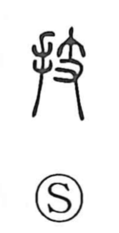

技

Uncategorized
Kun: waza, takumi | On: gi
skill ・ technique ・ craft
Explanation
A phono-semantic character, 技 combines the hand element with 支, which serves as the phonetic and gives the on-reading gi. The same phonetic appears in 伎 (“waza: skill”) and 妓 (“chanteuse”), both associated with performance. Shirakawa points to an older form, 歧, depicting a person inclining the body to sing or dance, with the left part expressing that tilt. From this image of graceful bodily movement and deft handwork, the sense of waza arose as skillful performance. The meaning then broadened from the performing arts (gigei) to technique and technology—the skills of making and manufacturing—so that at heart 技 speaks of skills exercised by the hands.